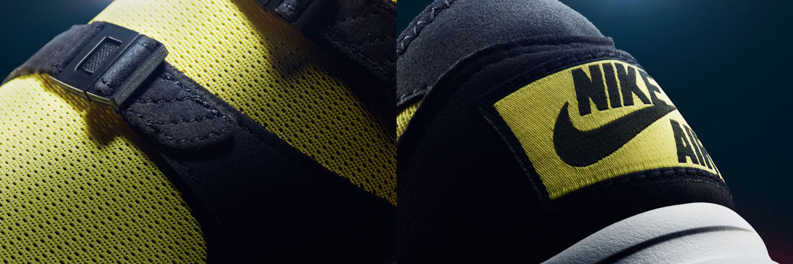
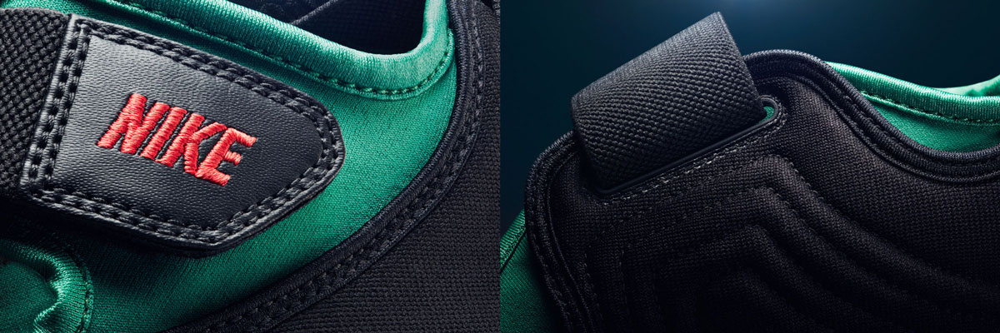
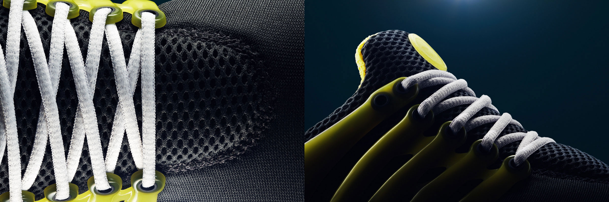
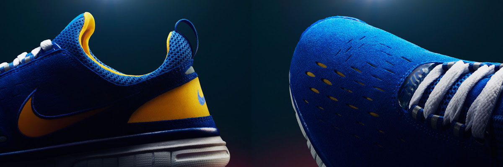
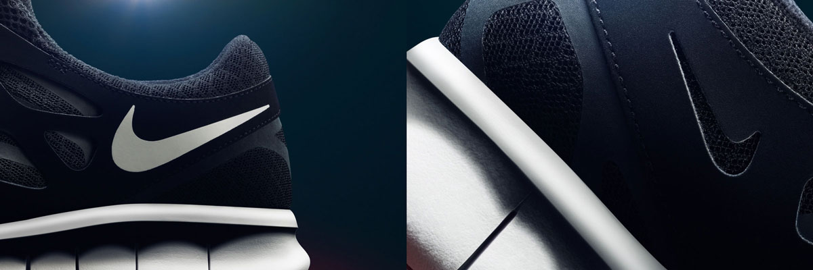
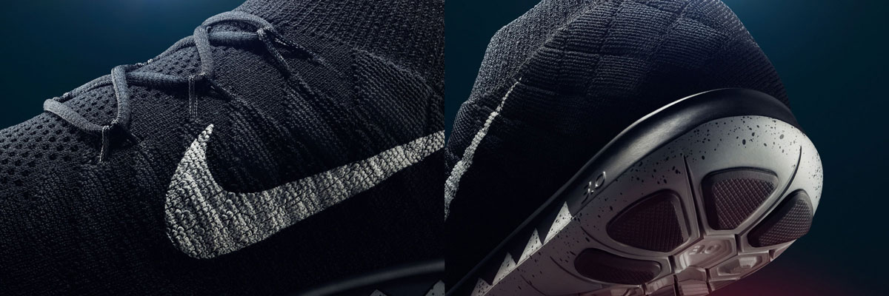
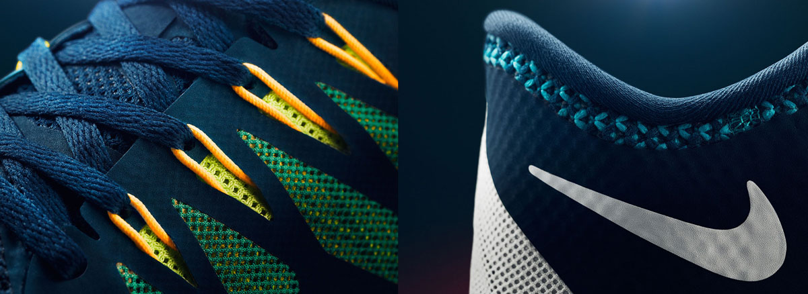

Part sandal, part running tight and introduced in a bumblebee color scheme, the Nike Sock Racer wasn't your average shoe. It was inspired by Bill Bowerman’s mandate to strip away all unnecessary elements of a running shoe and honed to act as an extension of the foot.

Still, no one expected this ultralight racing flat to make the impact it did, but it became an instant favourite of marathon runners and triathletes. Transcending sports and genders, the Sock Racer also inspired cult favorites like the Air Sock, Air Flow, Air Current and Aqua Sock — and made a fashion statement, due to its avant-garde styling.
Debuting in 1996, the Nike Air Rift wasn't heavily advertised — but word of mouth and a fascination with its statement looks helped it move quickly. A stretch fit, Velcro fastening and, most of all, unique split-toe design made the Air Rift instantly recognizable.

Developed with insight from Tinker Hatfield, its design was inspired by the running style of Kenyan barefoot athletes. Named after Kenya’s Rift Valley Province and debuting in the colors of the country's flag, the Air Rift would also attract an audience who simply wanted to wear something this strange and beautiful on their feet.
The Nike Air Presto was created as a kind of T-shirt for the foot, with a unique XXXS-XXXL sizing structure that referred to its apparel inspiration. It also conveyed the sock-like snugness of the elastic upper's fit, which drew upon the technical advances of the 1993 Air Huarache Light. Additionally, an injection-moulded ‘finger cage’ provided extra support around the mid-foot and heel, while eyelets located at the tips of the ‘fingers’ were laced across the V-notch of the mesh upper.

Once laced, the shoe’s flexibility meant it could be pulled on and off like a slip-on, using the heel clip. This commitment to minimalism won it fans from the start, when the Air Presto arrived the same year as the equally experimental Air Woven, in a spectrum of bright colorways derived from the ‘fruit flavours’ of the original Apple iMac computer. Reworked as an HTM (Hiroshi Fujiwara, Tinker Hatfield, Mark Parker) release, given an early NIKEiD option and spawning an entire series of its own, the Presto design was a favorite of runners and collectors alike.
Pitched halfway between a bare foot and a regular running shoe, the Nike Free 5.0 was so revolutionary that it spawned countless imitators and came with a warning attached.

Due to its flexible design and the natural motion philosophy, the Free 5.0 struck a chord with athletes everywhere. But the seamless upper and responsive cushioning—elements that had been designed purely for performance—began to resonate with a discerning audience seeking progressive design for everyday wear, too.
Back in 2011, urban running clubs were gaining in popularity and the traditional running shoe was growing stale. Nike designed the Free Run+ 2 to flex and move naturally with the foot, and it offered a more sock-like fit, distinctive asymmetrical lacing and decidedly non-traditional design lines.

A great ride supported its good looks, and the shoe quickly transcended the performance running world to become an icon of modern sport style. Later, the City Pack dropped, featuring color schemes for New York, London, Tokyo, Shanghai and Rio, cementing the shoe as a global classic and helping to redefine what a running shoe could be.
This is the epitome of natural performance, wrapped in Flyknit and cushioned with a hex outsole. The new flexible hex design evolves from the classic square-cut Nike Free to bring better multi-directional movement to a runner’s natural stride.

Allowing the foot to move like it’s meant to, the Free 3.0 helps to ensure ultimate natural motion for a better, stronger run. Up top, flexibility meets the ultralight support and contoured fit of Flyknit, creating the most adaptive, natural fit to ever hit the road.
Marking the 10th anniversary of Nike Free, 2014’s Nike Free 5.0 brings everyday flexibility to the people. More supportive and cushioned than the 3.0 or 4.0, the versatile 5.0 shares their new hexagonal outsole—an evolution of the iconic square-cut Nike Free design, bringing better multi-directional movement to a runner’s natural stride.

Up top, an ultra-breathable Flywire-reinforced upper delivers a secure, lightweight and highly adaptive fit. Engineered to move as you’re meant to, the Free 5.0 is the perfect fit for every foot.
press the play button to spin up the zoetrope. scroll to zoom and
click and drag to rotate the camera.